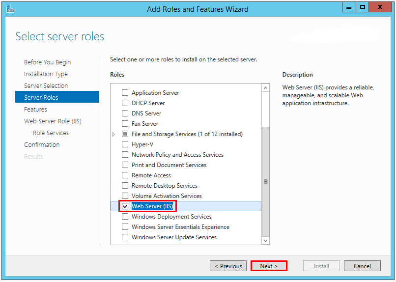
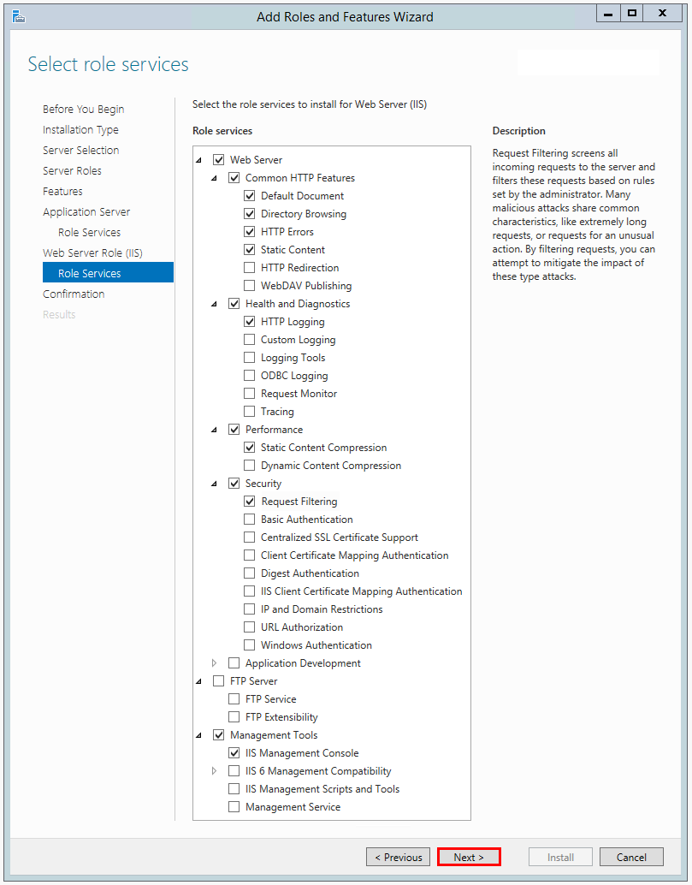
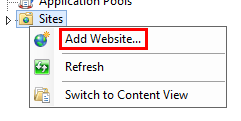
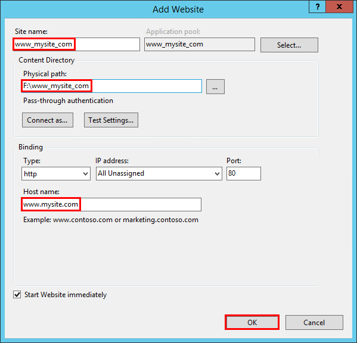
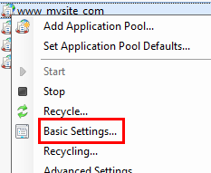
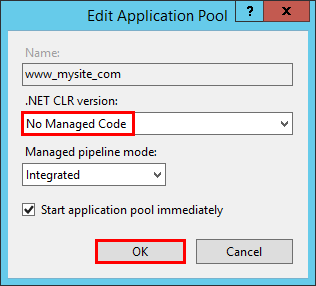
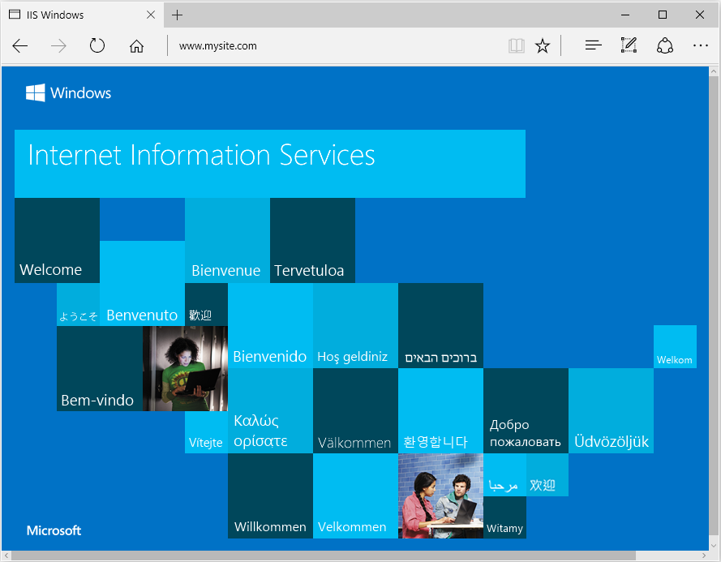

Publishing to IIS¶
By Luke Latham and Rick Anderson
Sections:
Supported operating systems¶
The following operating systems are supported:
- Windows 7 and newer
- Windows Server 2008 R2 and newer*
*Conceptually, the IIS configuration described in this document also applies to hosting ASP.NET Core applications on Nano Server IIS, but refer to ASP.NET Core on Nano Server for specific instructions.
IIS configuration¶
Enable the Web Server (IIS) server role and establish role services.
Windows desktop operating systems¶
Navigate to Control Panel > Programs > Programs and Features > Turn Windows features on or off (left side of the screen). Open the group for Internet Information Services and Web Management Tools. Check the box for IIS Management Console. Check the box for World Wide Web Services. Accept the default features for World Wide Web Services or customize the IIS features to suit your needs.

Windows Server operating systems¶
For server operating systems, use the Add Roles and Features Wizard via the Manage menu or the link in Server Manager. On the Server Roles step, check the box for Web Server (IIS).
On the Role services step, select the IIS role services you desire or accept the default role services provided.
Proceed through the Confirmation step to enable the web server role and services.
Install the .NET Core Windows Server Hosting bundle¶
- Install the .NET Core Windows Server Hosting bundle on the server. The bundle will install the .NET Core Runtime, .NET Core Library, and the ASP.NET Core Module. The module creates the reverse-proxy between IIS and the Kestrel server.
- Execute iisreset at the command line or restart the server to pickup changes to the system PATH.
Deploy the application¶
- On the target IIS server, create a folder to contain the application’s assets.
- Within the folder you created, create a logs folder to hold application logs (if you plan to enable logging). If you plan to deploy your application with a logs folder in the payload, you may skip this step.
- Deploy the application to the folder you created on the target IIS server. MSDeploy (Web Deploy) is the recommended mechanism for deployment, but you may use any of several methods to move the application to the server (for example, Xcopy, Robocopy, or PowerShell). Visual Studio users may use the default Visual Studio web publish script. For information on using Web Deploy, see Publishing to IIS with Web Deploy using Visual Studio.
Warning
.NET Core applications are hosted via a reverse-proxy between IIS and the Kestrel server. In order to create the reverse-proxy, the web.config file must be present at the content root path (typically the app base path) of the deployed application, which is the website physical path provided to IIS.
Sensitive files exist on the app’s physical path, including subfolders, such as my_application.runtimeconfig.json, my_application.xml (XML Documentation comments), and my_application.deps.json. The web.config file is required to create the reverse proxy to Kestrel, which prevents IIS from serving these and other sensitive files. Therefore, it is important that the web.config file is never accidently renamed or removed from the deployment.
Configure the website in IIS¶
- In IIS Manager, create a new website. Provide a Site name and set the Physical path to the application’s assets folder that you created. Provide the Binding configuration and create the website.
- Set the application pool to No Managed Code. ASP.NET Core runs in a separate process and manages the runtime.
Note
If you change the default identity of the application pool from ApplicationPoolIdentity, verify the new identity has the required permissions to access the application’s assets and database.
Open the Add Website window.

Configure the website.

In the Application Pools panel, open the Edit Application Pool window by right-clicking on the website’s application pool and selecting Basic Settings... from the popup menu.

Set the .NET CLR version to No Managed Code.

Browse the website.

Create a Data Protection Registry Hive¶
Data Protection keys used by ASP.NET applications are stored in registry hives external to the applications. To persist the keys for a given application, you must create a registry hive for the application’s application pool.
For standalone IIS installations, you may use the Data Protection Provision-AutoGenKeys.ps1 PowerShell script for each application pool used with an ASP.NET Core application. The keys will be persisted in the registry.
In web farm scenarios, an application can be configured to use a UNC path to store its data protection key ring. By default, the data protection keys are not encrypted. You can deploy an x509 certificate to each machine to encrypt the key ring. See Configuring Data Protection for details.
Warning
Data Protection is used by various ASP.NET middlewares, including those used in authentication. Even if you do not specifically call any Data Protection APIs from your own code you should configure Data Protection with the deployment script or in your own code. If you do not configure data protection when using IIS by default the keys will be held in memory and discarded when your application closes or restarts. This will then, for example, invalidate any cookies written by the cookie authentication and users will have to login again.
Common errors¶
The following is not a complete list of errors. Should you encounter an error not listed here, please leave a detailed error message in the DISQUS section below (click Show comments to open the DISQUS panel).
To diagnose problems with IIS deployments, study browser output, examine the server’s Application log through Event Viewer, and enable module logging. The ASP.NET Core Module log will be found on the path provided in the stdoutLogFile attribute of the <aspNetCore> element in web.config. Any folders on the path provided in the attribute value must exist in the deployment. You must also set stdoutLogEnabled=”true” to enable module logging. Applications that use the publish-iis tooling to create the web.config file will default the stdoutLogEnabled setting to false, so you must manually provide the file or modify the file in order to enable module logging.
A quick way to determine if the IIS reverse proxy to the Kestrel server is working properly is to perform a simple static file request for a stylesheet, script, or image from the application’s static assets in wwwroot using Static File middleware. If the application can serve static files but MVC Views and other endpoints are failing, the problem is less likely related to the IIS-ASP.NET Core Module-Kestrel configuration and more likely within the application itself (for example, MVC routing or 500 Internal Server Error). In most cases, enabling application logging will assist in troubleshooting problems within the application. See Logging for more information.
Common errors and general troubleshooting instructions:
Installer unable to obtain VC++ Redistributable¶
- Installer Exception: Installation of the .NET Core Windows Server Hosting Bundle fails with 0x80070002 - The system cannot find the file specified.
Troubleshooting:
- If the server does not have Internet access while installing the server hosting bundle, this exception will ensue when the installer is prevented from obtaining the Microsoft Visual C++ 2015 Redistributable (x64) packages online. You may obtain an installer for the packages from the Microsoft Download Center.
UseUrls called before UseIISIntegration¶
- Browser: No response
- Application Log: Process ‘PROC_ID’ failed to start. Port = PORT, Error Code = ‘-2147023829’.
- ASP.NET Core Module Log: Unhandled Exception: System.AggregateException: One or more errors occurred. (Error -4092 EACCES permission denied)
Troubleshooting:
- If your application uses the UseUrls extension on WebHostBuilder, make sure you have positioned the UseUrls extension before the UseIISIntegration extension on WebHostBuilder. UseIISIntegration must overwrite any values you provide in UseUrls in order for the reverse-proxy to succeed.
Platform conflicts with RID¶
- Browser: No response
- Application Log: Faulting module: KERNELBASE.dll Exception code: 0xe0434352 Faulting module path: C:WINDOWSsystem32KERNELBASE.dll
- ASP.NET Core Module Log: Unhandled Exception: System.BadImageFormatException: Could not load file or assembly ‘teststandalone.dll’ or one of its dependencies. An attempt was made to load a program with an incorrect format.
Troubleshooting:
- If you published a self-contained application, confirm that you didn’t set a platform in buildOptions of project.json that conflicts with the publishing RID. For example, do not specify a platform of x86 and publish with an RID of win81-x64 (dotnet publish -c Release -r win81-x64). The project will publish without warning or error but fail with the above logged exceptions on the server.
URI endpoint wrong or stopped website¶
- Browser: ERR_CONNECTION_REFUSED
- Application Log: No entry
- ASP.NET Core Module Log: Log file not created
Troubleshooting:
- Confirm you are using the correct URI endpoint for the application. Check your bindings.
- Confirm that the IIS website is not in the Stopped state.
CoreWebEngine or W3SVC server features disabled¶
- OS Exception: The IIS 7.0 CoreWebEngine and W3SVC features must be installed to use the Microsoft HTTP Platform Handler 1.x.
Troubleshooting:
- Confirm that you have enabled the proper server role and features. See IIS Configuration.
Incorrect website physical path or application missing¶
- Browser: 403 Forbidden: Access is denied –OR– 403.14 Forbidden: The Web server is configured to not list the contents of this directory.
- Application Log: No entry
- ASP.NET Core Module Log: Log file not created
Troubleshooting:
- Check the IIS website Basic Settings and the physical application assets folder. Confirm that the application is in the folder at the IIS website Physical path.
Incorrect server role, module not installed, or incorrect permissions¶
- Browser: 500.19 Internal Server Error: The requested page cannot be accessed because the related configuration data for the page is invalid.
- Application Log: No entry
- ASP.NET Core Module Log: Log file not created
Troubleshooting:
- Confirm that you have enabled the proper server role. See IIS Configuration.
- Check Programs & Features and confirm that the Microsoft ASP.NET Core Module has been installed. If the Microsoft ASP.NET Core Module is not present in the list of installed programs, install the module. See IIS Configuration.
- Make sure that the Application Pool Process Model Identity is either set to ApplicationPoolIdentity; or if a custom identity is in use, confirm the identity has the correct permissions to access the application’s assets folder.
Incorrect proecessPath, bundle not installed, or server not restarted¶
- Browser: 502.3 Bad Gateway: There was a connection error while trying to route the request.
- Application Log: Process ‘0’ failed to start. Port = PORT, Error Code = ‘-2147024894’.
- ASP.NET Core Module Log: Log file created but empty
Troubleshooting:
- Check the processPath attribute on the <aspNetCore> element in web.config to confirm that it is dotnet for a portable application or .\my_application.exe for a self-contained application.
- You may have deployed a portable application without installing .NET Core on the server. If you are attempting to deploy a portable application and have not installed .NET Core, run the .NET Core Windows Server Hosting Bundle Installer on the server. See Install the .NET Core Windows Server Hosting Bundle.
- You may have deployed a portable application and installed .NET Core without restarting the server. Restart the server.
Incorrect arguments of <aspNetCore> element¶
- Browser: 502.3 Bad Gateway: There was a connection error while trying to route the request.
- Application Log: Process ‘PROC_ID’ failed to start. Port = PORT, Error Code = ‘-2147023829’.
- ASP.NET Core Module Log: Unhandled Exception: System.FormatException: Unrecognized argument format –OR – Expected to load required hostpolicy.dll from [IIS_WEBSITE_PHYSICAL_PATH] - This may be because of an invalid .NET Core FX configuration in the directory.
Troubleshooting:
- Examine the arguments attribute on the <aspNetCore> element in web.config to confirm that it is either (a) .\my_applciation.dll for a portable application; or (b) not present, an empty string (arguments=”“), or a list of your application’s arguments (arguments=”arg1, arg2, ...”) for a self-contained application.
Stopped Application Pool¶
- Browser: 503 Service Unavailable
- Application Log: No entry
- ASP.NET Core Module Log: Log file not created
Troubleshooting
- Confirm that the Application Pool is not in the Stopped state.